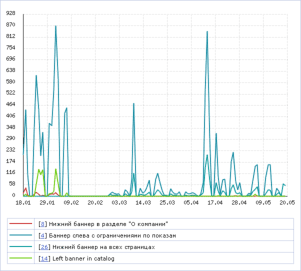
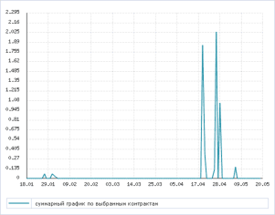

Система "1С-Битрикс: Управление сайтом" позволяет наглядно оценить с помощью графиков ход и результаты проведения рекламной компании как по отдельным баннерам, так и в рамках определённого контракта на показ рекламы. Построение графиков выполняется в соответствующих разделах модуля Реклама:
Графики позволяют отобразить информацию о количестве посетителей, просмотревших рекламу, а также данные по количеству показов, кликов и индексу отклика на рекламу (CTR). Период времени, в течение которого выполняется хранение данных, используемых для построения графиков, определяется в настройках модуля Реклама.
Выбор данных, на основе которых будет выполнено построение графика.
| Параметр | Описание |
|---|---|
| Период | Период времени, данные за который будут использованы при построении графика. Если значение поля не указано, то для построения графика будут использованы данные за весь доступный период. |
| *Что показывать | Укажите, какие данные должны быть отображены на графике:
|
| *Баннеры | Вы можете выбрать один и более баннеров, динамику по которым необходимо отобразить на графике.
В выпадающем списке вы можете выбрать тип графика:
|
| Группы | Поле позволяет построить график для одной или нескольких групп баннеров.
В выпадающем списке вы можете выбрать тип графика:
|
* Обязательные параметры.
Чтобы построить график на основе выбранных параметров, нажмите кнопку Найти. Для сброса значений параметров нажмите кнопку Отменить.
Нажмите на рисунок, чтобы увеличить
Выбор данных, на основе которых будет выполнено построение графика.
| Параметр | Описание |
|---|---|
| Период | Период времени, данные за который будут использованы при построении графика. Если значение поля не указано, то для построения графика будут использованы данные за весь доступный период. |
| *Что показывать | Укажите, какие данные должны быть отображены на графике:
|
| *Контракты | Выбор контракта подразумевает построение одного графика по всем баннерам, приписанным к данному контракту. В выпадающем списке вы можете выбрать тип графика:
|
* Обязательные параметры.
Чтобы построить график на основе выбранных параметров, нажмите кнопку Найти. Для сброса значений параметров нажмите кнопку Отменить.
Нажмите на рисунок, чтобы увеличить
См. также Диаграммы
| © «Битрикс», 2001-2008, «1C-Битрикс», 2008 | 1С-Битрикс: Управление сайтом |